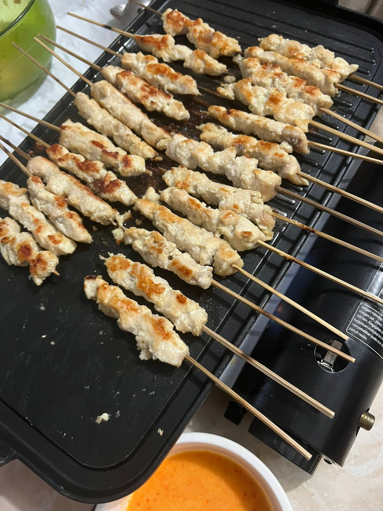
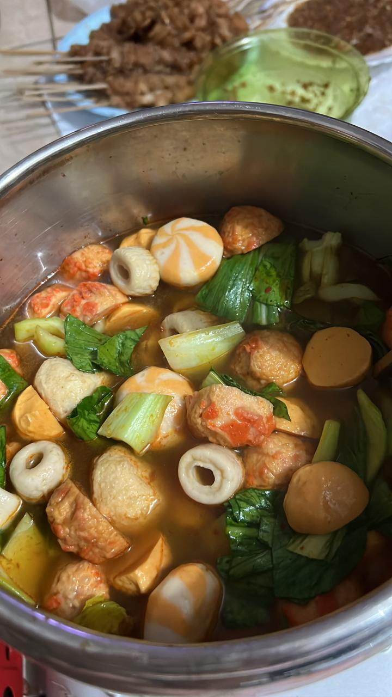

| Find Food | Review | About | |
|
|
|||
 |
Mac N Cheese! Cara bikin mac n cheese ini sangat mudah. Hal pertama rebus makaroni sampai setengah matang lalu tiriskan. Kedua rebus kembali dengan susu full cream dan masukkan keju. Aduk hingga merata dan siap untuk disantap. |
 |
Sata Maranggi! Cara bikin makanan khas Purwakarta ini sangat mudah. Potong kecil-kecil lalu marinasi dengan bumbu dan tunggu selama 1 jam. Lalu tusuk dan siap untuk dibakar hingga matang. Cara bikin bumbu adalah memakai kecap, cabai dan tomat yang sudah dipotong-potong. |
Sate Taichan! Cara bikinnya hampir mirip dengan sate maranggi, bedanya adalah bumbu marinasi dan sambalnya. |
 | Suki bumbu Tomyam! Rasa suki ini lebih ke asam dan pedas, memiliki banyak jenis isi ada yang memakai cheese dumpling, crabstick, dan lain-lain sesuai selera. |
 |
|